Thus Spoke Zakura
Thus Spoke Zakura (ths) gives you a disposable Zcash Regtest network on
your own machine. You can mine blocks, fund development accounts, send test ZEC,
inspect transactions, and connect another application. The launcher runs
Zakura, lightwalletd, and a wallet-backed dashboard in Docker. Every
host-published endpoint stays on 127.0.0.1.
This book teaches why each part exists and what happens when you use it.
The chapters build on one another. The ths CLI reference,
development guide, and troubleshooting guide
are there when you need a particular command or diagnosis.
Who this book is for
You should be comfortable running terminal commands and reading a small HTTP example. You do not need prior Zcash knowledge. We define Regtest, blocks, accounts, pools, notes, and wallet synchronization before relying on them.
Everything here is local development infrastructure. Regtest coins and keys have no value on mainnet or testnet — and the keys are not secret either. The seed is a fixed constant in the source, so every instance on every machine derives the same accounts, and anyone who knows this project can derive them too. That reproducibility is the point; it is also why nothing of value may ever touch an address shown by this environment.
This book documents launcher version 0.2.1; check yours with
ths --version.
One experiment, several chapters
We will start the default instance, look at its five user accounts, fund Account 2, send from Account 1 to Account 2, mine another block, and read the result through the API. Along the way, we will answer three questions:
- Who owns this fact? Zakura owns the chain, lightwalletd indexes it, the wallet owns spendable balances, and SQLite records development activity.
- When is it true? A block can exist before lightwalletd indexes it, and the index can advance before the wallet publishes a fresh balance snapshot.
- What can be retried? A recorded payment key can resume confirmation; a lost response before the key is recorded is ambiguous, and mining has no retry key.
Those distinctions explain most surprising behavior in the dashboard.
How to read
Read Chapter 1: Your first instance if you want to work along. Chapter 2 defines the components; Chapter 3 defines wallet state; Chapter 4 moves funds; Chapter 5 follows a block into the wallet; Chapter 6 deals with uncertain responses; and Chapter 7 connects your code.
A chapter starts with the idea, traces the flow, then gives a concrete action and what you should observe. Diagrams have text explanations beside them so the sequence still works without images.
Four terms to keep separate
| Term | In this book |
|---|---|
| Instance | One named set of Regtest containers, network, volumes, ports, and disposable data controlled by ths. |
| Node tip | Zakura’s latest block height and hash. A height alone does not identify a block after a reorganization. |
| Wallet snapshot | The server’s last reconciled view of user-account balances. The dashboard reads this through the accounts API. |
| Activity | A SQLite record of a faucet or send request, its transaction ID, and its confirmation status. It is not a balance ledger. |
Next: start a fresh instance.
1. Your first instance
In this chapter you will start one private chain, identify its endpoints, and watch a second one be thrown away. The next chapter will explain what the three services behind those endpoints do.
An instance is one named set of Docker containers, a private Docker
network, volumes, and host ports. The default name is default. Starting it
again creates a fresh chain and wallet; stopping it removes its data.
An image is the built template from which Docker starts a container;
changing source files does not alter an image that already exists.
thschecks Docker and the required images.- It removes leftovers for the selected instance name, then creates its network, volumes, and containers. Other names are untouched.
- An init container creates the seed, account records, wallet database, and Zakura Regtest configuration. Zakura starts, then lightwalletd, then the app.
- The app synchronizes its wallet and provisions Account 1. The launcher prints endpoints only when the app is ready.
- Ctrl+C, a normal shutdown, or a partial startup failure removes that instance’s resources and endpoint record.
Prepare Docker
Install Docker Desktop on macOS or Docker Engine/Desktop on Linux. Start it and confirm that both the client and daemon respond:
docker version
The server section must respond without sudo. If it does not, fix Docker
access before continuing. ths doctor performs the same basic Docker
reachability check after installation.
Install the launcher
The installer supports Intel and ARM macOS and Linux. It verifies the
release archive’s SHA-256 digest, installs ths in ~/.local/bin by default,
and pulls matching runtime images:
curl --proto '=https' --tlsv1.2 -fsSL https://raw.githubusercontent.com/zcashlabs/thus-spoke-zakura/main/install.sh | sh
ths --version
ths doctor
ths --version prints the launcher version. This book documents 0.2.1.
The installer reads three environment variables: TSZ_INSTALL_DIR chooses the
destination directory (default ~/.local/bin), TSZ_VERSION installs an exact
release instead of the latest, and TSZ_SKIP_IMAGE_PULL=1 skips the image
download. The image pull happens before the binary is moved into place, so
if Docker is not running the installer aborts with nothing installed. Start
Docker first, or install with TSZ_SKIP_IMAGE_PULL=1 and run ths pull later.
If your shell says ths: command not found, either the install aborted or
~/.local/bin is not on PATH. See troubleshooting for
the exact checks.
If you are working from a clone, use the source build instructions instead. The launcher uses Docker images, so a source edit does not automatically change a running app.
Start the running example
Open a terminal and run it there. Keep that terminal open; --no-open only
skips opening the browser, and the dashboard still runs. The launcher ends
with:
$ ths start --no-open
default is ready 🌸
Dashboard http://127.0.0.1:32805
Zakura RPC http://127.0.0.1:18232
lightwalletd http://127.0.0.1:9067 (network=regtest, tls=false)
P2P 127.0.0.1:18233
On a warm machine that takes well under a minute. The first run is much
slower, because Docker must pull about 1.7 GB of images. There is no fixed
sleep interval that means the wallet is ready; wait for default is ready.
What scrolls past before that line
Everything above default is ready is the launcher narrating its work, and
it is noisier than the result. You will see Preparing a fresh default environment…, Starting default…, then raw Docker network, volume, and
container IDs, because ths lets Docker write to your terminal directly.
Interleaved with those IDs, the init container prints the instance’s
secrets: a ⚠ DISPOSABLE REGTEST SECRETS banner, the BIP-39 mnemonic,
and for each of the five development accounts its unified address and its
unified spending key in hex. That is deliberate. These are the supported
way to import one of these accounts into an external wallet, and they are
safe to print because they protect nothing — Chapter
3 explains why.
A fresh chain already has 103 blocks
Before Account 1 can hold anything, the treasury must have a spendable
mining reward, and a coinbase reward is not spendable until it has matured
by COINBASE_MATURITY_BLOCKS (100) confirmations. So startup mines through
maturity, shields a reward into the treasury, and pays Account 1 its 5
Orchard ZEC. A newly ready instance therefore sits at height 103, with
the wallet fully scanned to the same height. Nothing is wrong; the Network
page just does not start at 0.
Read the endpoints from a second terminal
In a second terminal, inspect the same instance:
$ ths status
default: running
Dashboard http://127.0.0.1:32805
Zakura RPC http://127.0.0.1:18232
lightwalletd http://127.0.0.1:9067 (network=regtest, tls=false)
P2P 127.0.0.1:18233
ths status reports whether the app container is running and prints
endpoints. It does not report the node height or wallet scan status.
ths endpoints --json reports these keys:
| Key | Owner and purpose |
|---|---|
dashboard | HTTP URL for the React UI and /api/v1/ server API. |
rpc | Zakura’s local JSON-RPC URL. |
lightwalletd | Plaintext lightwalletd gRPC endpoint for local clients. |
p2p | Zakura’s local peer address. |
network | The chain this instance runs: always "regtest". |
tls | Always false; nothing here uses TLS. |
Host ports are fixed defaults, all published on 127.0.0.1: dashboard
32805, Zakura RPC 18232, P2P 18233, lightwalletd 9067. They do not
change between runs, and the launcher never picks a substitute — if one is
occupied, startup fails and names it. ths start --port-offset <N> shifts
all four by N, which must be a multiple of 10; that is the only thing that
moves them. Scripts should still read ths endpoints --json rather than
hard-code a port, because a given instance may have been started with an
offset. ths open opens the dashboard for you.
The dashboard’s Network page or GET /api/v1/status shows node height and
wallet sync state if you need more than process status.
Give another experiment its own name
A second instance needs its own ports. Since every instance wants the same four defaults, the name alone is not enough:
$ ths --name alice start --no-open
Preparing a fresh alice environment…
Starting alice…
Error: port 32805 is already in use on 127.0.0.1
Give it an offset instead:
$ ths --name alice start --no-open --port-offset 10
alice is ready 🌸
Dashboard http://127.0.0.1:32815
Zakura RPC http://127.0.0.1:18242
lightwalletd http://127.0.0.1:9077 (network=regtest, tls=false)
P2P 127.0.0.1:18243
Address that instance with the same global option:
ths --name alice status
ths --name alice endpoints --json
Names contain 1–40 lowercase letters, digits, or internal hyphens. Each name
gets its own chain, wallet, volumes, and cleanup. Commands without --name
target default. The offset belongs to the start that created the
instance; later commands find its ports from the instance record.
Stop deliberately
Stopping is not a crash to recover from — it is how the environment is meant
to end. Try it on alice, which you do not need again. Return to the
terminal running it and press Ctrl+C. The launcher deletes that
instance’s containers, volumes, chain, seed, keys, and test funds. default
is untouched. If you need a result out of an instance, copy it out before
stopping.
If an interrupted process left resources behind, ths --name alice reset --force deletes only alice and its volumes. This is irreversible. Never
use Regtest addresses or keys for real ZEC, and never publish these local
services beyond loopback.
Leave default running. Chapter 4 funds and
spends on it. If you do stop it, start it again with ths start --no-open;
you will get a fresh chain back at height 103 with the same five accounts,
but every block, transaction, and balance from this run will be gone.
What you learned: ths controls an instance, not a persistent wallet.
Data belongs to a particular run, and the ports belong to the instance’s
offset. Next: meet the services inside the
instance.
2. Components and state
Chapter 1 started an instance and printed four endpoints. Now we will follow those endpoints inward. The important question is not merely which container handles a request, but which component owns the answer.
A block is a unit of chain history. The node tip is Zakura’s latest block height and hash. The mempool holds transactions the node knows about before they are included in a block. A wallet scans chain data for funds it can spend. A wallet can lag the node even when both services are healthy.
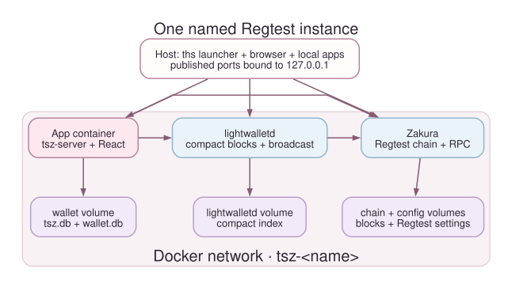
thssupervises a Zakura container, a lightwalletd container, and an app container on an instance-specific Docker network.- Zakura owns Regtest blocks, mempool, and JSON-RPC. lightwalletd follows Zakura and serves compact blocks to wallet clients over gRPC.
- The app runs
tsz-server. It serves both/api/v1/and the built React dashboard, owns the wallet databases, and uses lightwalletd to scan and broadcast. - A browser or local program reaches only the loopback-published ports.
Internal container listeners can use
0.0.0.0inside the private network; every host-published service binds to127.0.0.1.
The five owners of information
| Component | Owns | Read it through |
|---|---|---|
| Zakura | Canonical chain, block height and hash, mempool, transaction lookup | JSON-RPC or the server’s explorer API |
| lightwalletd | Compact-block index and gRPC stream over the node’s chain | A lightwalletd-compatible wallet client |
Wallet SDK in tsz-server | Scanned notes, transparent outputs, and spendable balances in wallet.db | The server’s wallet snapshot and accounts API |
| Server SQLite store | Seed, derived account records, activity, and idempotency keys in tsz.db | Server API and local development commands |
| Browser | UI state and a query cache of server responses | Wallet, Explorer, and Network pages |
The app’s wallet and SQLite files share the instance’s wallet volume, but
they answer different questions. wallet.db tells the wallet what it has
scanned and can spend. tsz.db records which development request produced a
transaction ID. Activity cannot reconstruct a balance.
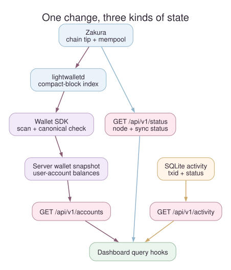
- Zakura advances the node tip. lightwalletd indexes compact blocks from that chain.
- The server wallet scans through lightwalletd and compares its checkpoint height and hash with Zakura before publishing a fresh account snapshot. If the chain reorganizes, it rewinds to a common block and scans again.
GET /api/v1/accountsreads the server snapshot. The dashboard’s query hooks fetch that endpoint. Server-sentwallet,chain, andsyncevents tell the hooks to refetch, rather than carrying balances themselves.- SQLite activity records a send or faucet request’s transaction ID and
confirmation status.
GET /api/v1/activityreads it separately.
This ordering explains a common observation: the Network page may show a new
node height while Wallet still shows the last known balances. The wallet must
wait for indexing and scanning, and the server must validate the chain
checkpoint. GET /api/v1/status reports wallet_sync.state as syncing,
ready, or error, along with observed and scanned heights and hashes.
When synchronization fails, the last snapshot may remain visible. Treat it as
stale until the server reaches ready.
Startup and data ownership
The app image first runs init. It creates tsz.db, wallet.db, the seed,
six derived account records, and a Regtest Zakura configuration. Account 6 is
the hidden mining and faucet treasury; only Accounts 1–5 are exposed as user
accounts. The node mines to the treasury’s transparent address. Normal
transparent-output queries cover user accounts; treasury rewards are
discovered when a faucet payment needs replenishment.
The instance also has separate chain, lightwalletd, and config
volumes. ths removes volumes belonging to the selected instance on
shutdown, interruption, or startup failure. Other named instances survive.
For the exact container and endpoint lifecycle, revisit Chapter 1. For the meaning of an account balance, continue to Chapter 3.
Source map: launcher runtime, server startup, API snapshot, reconciliation, and dashboard queries.
Next: accounts, pools, and balances.
3. Accounts and balances
The previous chapter separated chain state from wallet state. This chapter explains what the wallet is counting. When you later send 1 ZEC, you should be able to predict which account and pool will change, and why a displayed total is not always spendable.
An account is a wallet identity
The app initializes six deterministic wallet accounts from one disposable seed. Accounts 1–5 are development accounts. Account 6 is a hidden treasury used for mining rewards and faucet payments. The accounts API, Wallet page, account selector, and user-facing balances expose only 1–5.
Each user account has a transparent address and a unified address. For the flows in this book, selecting the Transparent destination pool uses the transparent address; selecting Orchard uses the unified address for a shielded output. The server derives both from the instance’s seed.
That seed is fixed: the server builds it from 32 zero bytes, which makes
the mnemonic the well-known abandon abandon … art phrase. Every instance,
on every machine, therefore derives the same six accounts and the same
addresses — Account 1’s unified address always begins uregtest1zkuzfv5m3….
A different instance name gives you a different chain and different balances;
it does not give you different keys.
Say that plainly: these keys are public knowledge. Anyone who has read this project can derive every address and every spending key your instance uses. That is fine, because it is what makes the environment disposable and reproducible — and it is exactly why nothing of value may ever touch these addresses. Never send real ZEC to an address shown by this environment.
A pool is a way value is represented and spent, not a separate wallet. Transparent value lives in unspent transaction outputs, or UTXOs; their addresses and amounts are public chain data. Orchard value lives in shielded notes. The wallet learns which notes belong to it by scanning compact blocks; the public explorer cannot identify their recipient or read a memo.
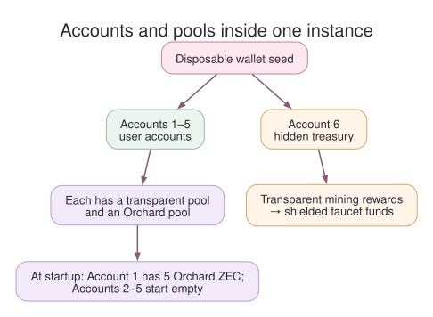
- Each user account can hold a transparent balance and an Orchard balance. These are separate sources of funds, even though the dashboard also shows their sum.
- The miner sends block rewards to Account 6’s transparent address. Account 6 never appears in a user account list or balance total.
- The faucet can spend from Account 6 to a chosen user account and pool. A send between users spends the selected source account and pool and pays to the selected destination account and pool.
ZEC, zatoshi, and spendability
ZEC is the amount unit you enter in the UI and CLI. Zatoshi is the
integer unit used by the API: 1 ZEC = 100,000,000 zatoshi. For example,
0.5 ZEC is 50000000 zatoshi. Use integer zatoshi in JSON requests so a
decimal floating-point calculation does not choose the wrong amount.
The accounts API returns transparent_zatoshi and orchard_zatoshi for
each user account. These are the server’s last reconciled wallet
snapshot, not numbers reconstructed from the block explorer. The dashboard
derives its displayed total from those fields.
A balance is not a promise that the next transaction can spend every zatoshi. The wallet SDK selects actual outputs or notes, requires a sufficient scan, and accounts for the transaction fee. Pending change and immature mining rewards can also affect spendability. Change is the unspent remainder of a selected input returned to the wallet; it may not be ready to spend immediately.
You do not have to guess how much room the fee needs. POST /api/v1/send/quote
builds a dry-run proposal for one account and pool pair — it constructs
nothing and broadcasts nothing — and answers with real numbers:
$ DASHBOARD_URL="$(ths endpoints --json | python3 -c 'import json,sys; print(json.load(sys.stdin)["dashboard"])')"
$ curl -fsS "$DASHBOARD_URL/api/v1/send/quote" -H 'content-type: application/json' \
--data '{"from_account":1,"source_pool":"orchard","destination_pool":"orchard"}'
{"available_zatoshi":399990000,"fee_zatoshi":10000,"max_zatoshi":399980000}
available_zatoshi is what the pool holds, fee_zatoshi is what the SDK’s
input selection will actually charge, and max_zatoshi is the largest amount
that will go through. max_zatoshi, not the displayed balance, is the number
to compare an intended amount against. When a send fails anyway, check the
source pool and inspect wallet sync status before trying again.
At the end of startup, Account 1 has 5 Orchard ZEC. Account 2 starts empty. In the next chapter, we will give Account 2 transparent funds and then send it Orchard funds from Account 1. That will make the two balances visibly different.
Where faucet funds come from
A faucet request does not mint coins directly into the destination. The miner first pays rewards to the hidden treasury’s transparent address. The reward created by mining a block is called coinbase; it must mature before it can be spent. When the treasury’s spendable Orchard funds are insufficient, the server discovers needed mature rewards, shields them into the treasury’s Orchard pool, confirms that shielding transaction, and retries the faucet payment. This can move the node height by more than the one block used to confirm the final faucet payment.
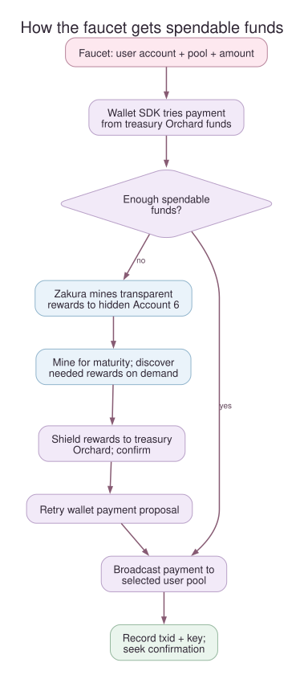
- Zakura mines to Account 6’s transparent address. The rewards are not user-account balances.
- The wallet SDK first tries the treasury payment. On insufficient spendable Orchard funds, the server advances the chain as needed for reward maturity, discovers the required reward output, and shields it to Account 6’s Orchard funds. It retries the payment proposal.
- The server broadcasts the faucet transaction to the chosen user account and destination pool, records activity, and normally mines a confirming block. Each account faucet request is limited to 5 ZEC.
Routine user wallet synchronization does not query all treasury transparent outputs. Treasury discovery runs when replenishment needs it. The private details stay out of the user account list, but the public chain may still show transparent mining rewards and shielding value movement.
Three views of the same experiment
After a payment, these views can temporarily disagree without being contradictory:
| View | What it can establish |
|---|---|
| Network or Zakura RPC | Which block is the current node tip. |
| Recent activity | Which request and transaction ID the server recorded, and whether it has a confirming block hash. |
| Wallet account balance | What the server’s reconciled wallet scan says the user account holds. |
Read Chapter 5 for the precise order in which those views catch up. The architecture chapter maps each view to its owner.
Next: fund Account 2 and send between pools.
4. Fund and send
You now know that an account has two pool balances and that the treasury
funds faucet requests. We will use the default instance from Chapter 1 to
make those ideas visible. Keep ths start --no-open running in its first
terminal; run commands below in a second terminal. If you stopped it, run
ths start --no-open again — you get the same five accounts on a fresh
chain at height 103, which is all this chapter needs.
The dashboard has Wallet, Explorer, and Network pages. Use ths open to bring it up. On desktop, the Mine button sits at the top of
each page; on a narrow screen you can always use ths mine.
First, observe the starting state
Open Wallet. Account 1 should show 5 Orchard ZEC after startup;
Account 2 should have no funds. If balances have not appeared, inspect
GET /api/v1/status or follow troubleshooting before
sending. The server wallet snapshot, not a browser calculation from chain
history, supplies these balances.
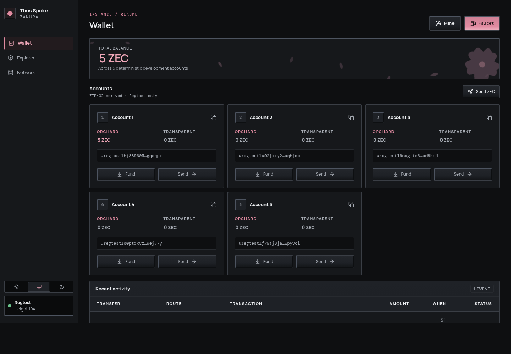
Two buttons open the faucet, and they are labelled differently. Faucet in the page header is the general one, and it only appears on Wallet — the Explorer and Network pages show just Mine. On each account card, Fund opens the same dialog with that account preselected.
Fund Account 2’s transparent pool
- Select Fund on Account 2’s card, or Faucet in the header.
- In the Fund an account dialog, choose Destination account 2, Destination pool Transparent, and Amount (ZEC) 1. Select Add funds.
- Look at Recent activity for the transaction ID (
txid), the unique identifier of the broadcast transaction, and its status. When confirmed, Account 2’s transparent balance should rise by 1 ZEC; its Orchard balance is still separate.
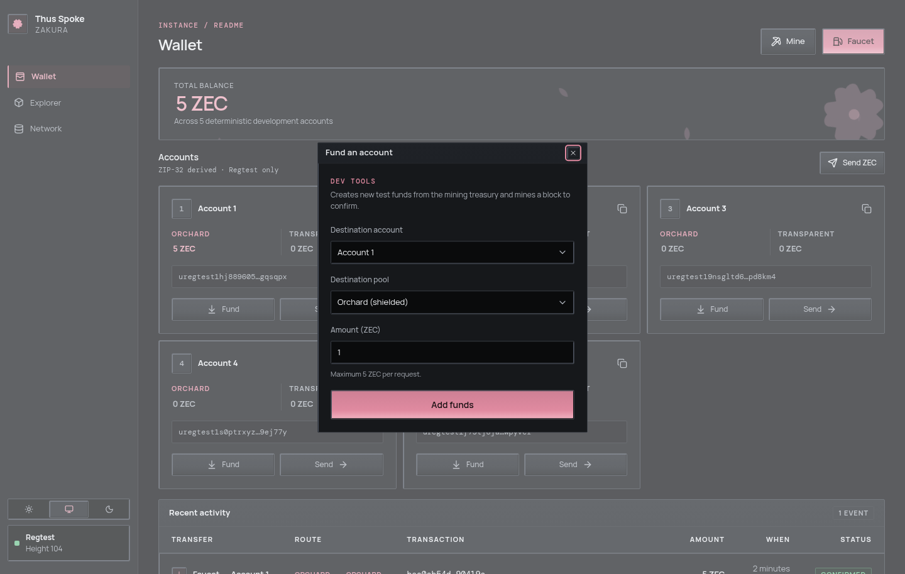
The same operation from the second terminal takes about a second:
$ ths wallet faucet --accounts 2 --amount 1 --pool transparent
Funded account 2 with 1 ZEC (transparent pool) on default.
Transaction: effa7550e63fe84593d1436c27ba0d5079a819fa12311f4dd5c72e4535e39a75
Every transaction and block hash in this book came from one particular run. Yours will differ; only the shape of the output is the same.
Choose either the UI action or the CLI command if you want exactly one
faucet payment. Running both makes two payments. The faucet may mine extra
blocks first to mature and shield treasury rewards, then normally mines one
block to confirm the account payment. It accepts at most 5 ZEC per account
per request. If auto-mining fails, the recorded activity may remain
broadcast; Chapter 6 explains that state.
Send Orchard funds from Account 1 to Account 2
This is a different pool movement from the transparent faucet payment.
- On Wallet, select Send ZEC.
- Set From account to 1 and Source pool to Orchard. Set Destination account to 2 and Destination pool to Orchard.
- Enter 1 in Amount (ZEC). Optionally enter
hello from Regtestin Memo (optional), then select Send ZEC. - Check Recent activity for the transaction ID and actual status. After confirmation, Account 2 has 1 Orchard ZEC and its earlier 1 transparent ZEC. Account 1’s Orchard balance falls by 1 ZEC plus the fee; do not expect it to be exactly 4 ZEC.
The dialog does the fee arithmetic for you. As soon as it has an account and
a pool it asks POST /api/v1/send/quote, and the hint under the amount field
reads “N ZEC spendable after a 0.0001 ZEC network fee” with the real
numbers for that account and pool. The Max button fills in that spendable
figure. An amount above it is rejected before anything is built.
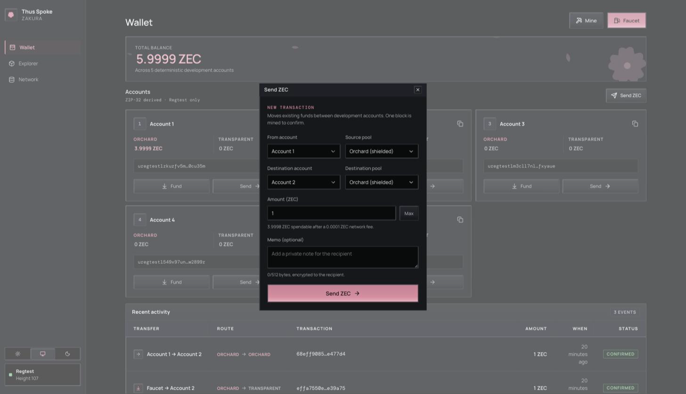
CLI equivalent, also about a second:
$ ths wallet send --from 1 --to 2 --amount 1 --memo "hello from Regtest"
Sent 1 ZEC from account 1 (orchard pool) to account 2 (orchard pool) on default.
Memo: hello from Regtest
Transaction: 68eff90854875decad05e9821f05ff3267a8d7c140b87b24edd9e32231e477d4
Confirmed in: df2f5b28f8500c437901f9cc371827fa5c1af0af86247b88b8a481c52b36f919
After that faucet payment and this send, the accounts API reported Account 1
at 399990000 Orchard zatoshi and Account 2 at 100000000 transparent plus
100000000 Orchard. Account 1 is down 1 ZEC and a 10,000 zatoshi fee,
exactly as the quote predicted — 3.9999 ZEC, not 4.
Run the UI action or the command, not both, for one transaction. The UI and CLI create a fresh idempotency key for each new submission. A second click or command is a second attempt, not a replay of the first.
- Pair 1 — where the money comes from. The source account is one of
1–5, and the source pool decides what is spent:
transparentspends that account’s UTXOs,orchardspends its shielded notes. - Pair 2 — what the receiver gets. The destination account is one of
1–5 and must differ from the source.
orchardpays its unified address;transparentpays its t-address. - The fee is on top of the amount, taken from the source account. That
is why
max_zatoshifrom the quote, not the balance, is the ceiling. - A transparent source rarely spends exactly. Transparent inputs must be spent whole, so the change comes back as an Orchard note in the source account rather than as transparent change.
- Only an Orchard destination carries a memo. A transparent output has no memo field at all, and a memo sent with one is rejected.
The memo is encrypted to the recipient and limited to 512 UTF-8 bytes, not 512 characters. The UI disables the field for Transparent destinations; the server rejects a present memo there too.
Be clear about what happens to it afterwards: this environment cannot show
you a memo again. Activity rows have no memo column, no API response
carries one, and no page displays one. The memo really is attached to the
Orchard output — it is simply write-only from here. The one way to read it
back is outside this dashboard: GET /api/v1/accounts returns a
unified_full_viewing_key for each of Accounts 1–5, and a wallet imported
with that key can decrypt the memos sent to that account. The public
Explorer never reveals memo plaintext or Orchard recipient addresses.
A pool conversion to try next
If you want to see a transparent source fund an Orchard destination, use the transparent funds in Account 2:
ths wallet shield --from 2 --to 3 --amount 0.5
This sends 0.5 ZEC to Account 3’s Orchard pool. The SDK selects
transparent inputs and pays a fee. Its change strategy can return any
remaining value to the source account’s Orchard pool, so Account 2’s
transparent balance need not simply drop by 0.5 ZEC. Inspect both pools
afterward. The reverse operation is ths wallet unshield --from 3 --to 2 --amount 0.2. See the CLI reference
for all pool options.
Look at the chain without confusing it with the wallet
Explorer lists blocks and can search a height, block hash, transaction ID, or transparent address. Open your transaction ID from Recent activity. Transparent inputs and outputs are public chain data; Orchard details are not exposed as the user-account transfer shown by Recent activity. The server’s activity record knows the development account IDs, while the Explorer follows the public chain.
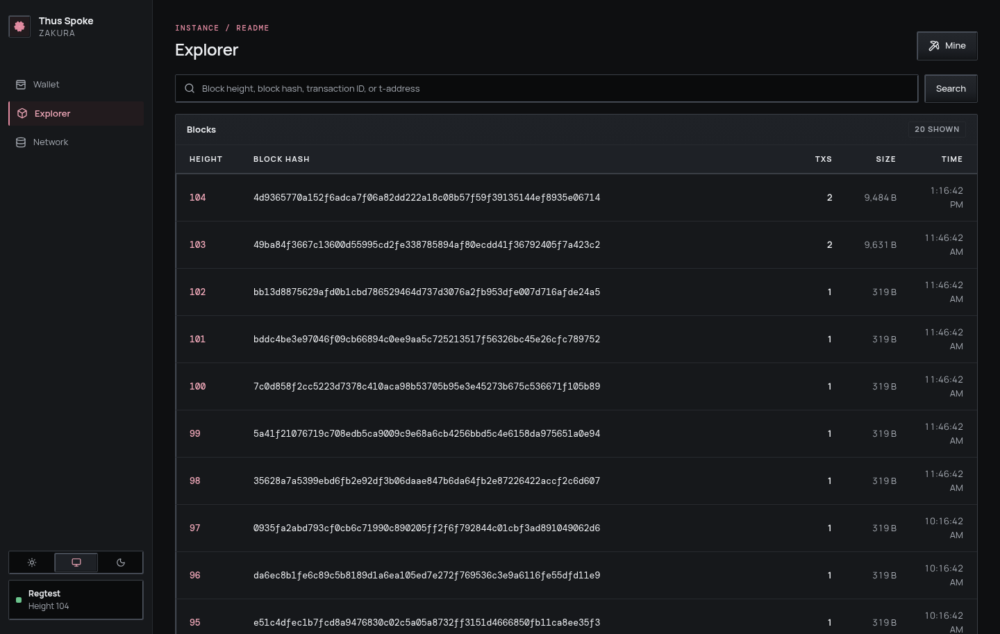
Network shows the node height, tip hash, account count, and published endpoints. If a transaction is recorded but the wallet balance has not caught up, follow the next chapter rather than computing a balance from Explorer.
What you learned: a payment chooses two account/pool pairs, and confirmation, activity, and wallet balance are related but separate observations. Next: mine a block and trace wallet synchronization.
5. Mining and wallet sync
You have funded Account 2 and sent a payment. Both operations normally mine a confirming block for you. This chapter mines explicitly and follows a block from the node to the wallet and browser.
Mining asks Zakura to generate Regtest blocks on demand. A transaction is confirmed when the node reports it in a block on its current chain with a block hash. That does not instantly make every wallet view current: lightwalletd still has to index the block, and the wallet still has to scan and reconcile it.
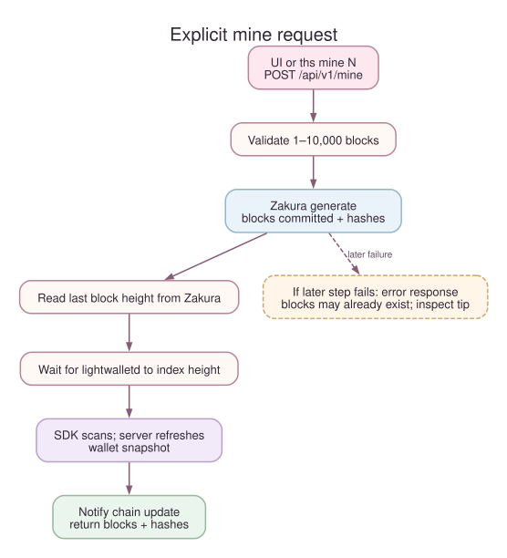
ths mine Nor the dashboard Mine dialog callsPOST /api/v1/minewith{"blocks":N}. The server accepts 1–10,000 blocks.- Zakura generates blocks and returns their hashes. The server asks Zakura for the last returned block’s height.
- The wallet waits for lightwalletd to index that height, scans compact blocks, reconciles against Zakura’s canonical block hashes, and publishes a fresh user-account snapshot at a matching checkpoint.
- The server notifies dashboard clients of a
chainupdate and returnsblocksandhashes. If a step after generation fails, the API returns an error even though blocks may already exist.
Mine and inspect one result
In the second terminal from Chapter 1, mine two blocks:
$ ths mine 2
Mined 2 blocks on default.
New tip: 9ef8f0064e3f088f2012fe04d5d70b42f00ae1e9676cdc3d5384ad31d384b8c4
The tip hash differs on every run. Two blocks come back in about a second; Regtest has no proof-of-work delay, so the wait is wallet scanning, not mining. The dashboard’s Mine dialog performs the same API operation. Do not run both if you intend to add only two blocks.
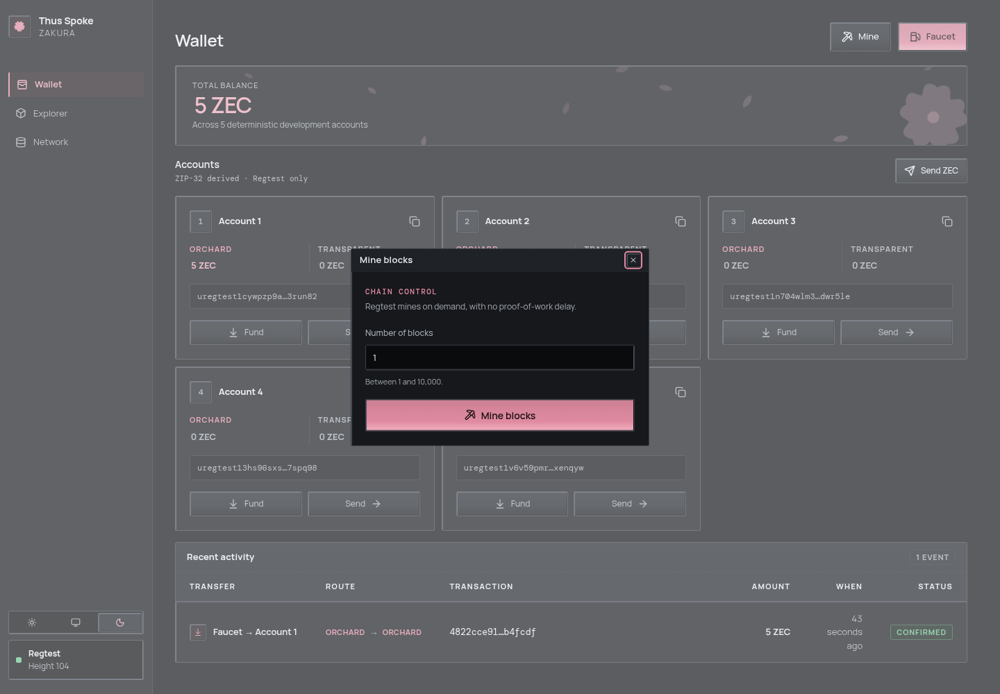
Read the node and wallet view through the running instance’s API:
DASHBOARD_URL="$(ths endpoints --json | python3 -c 'import json,sys; print(json.load(sys.stdin)["dashboard"])')"
curl -fsS "$DASHBOARD_URL/api/v1/status"
curl -fsS "$DASHBOARD_URL/api/v1/accounts"
ths status reports container status and endpoints, not chain height. In
GET /api/v1/status, node.blocks is the node height and
node.bestblockhash is the tip hash.
One field there will look wrong: node.chain reads "test", not
"regtest". That string comes straight from Zakura, which reports Regtest
under its testnet chain name; the Network page’s Chain tile shows the
same raw value. The instance is Regtest — status.network says Regtest
and ths endpoints --json says "network": "regtest". Ignore node.chain
and use either of those.
The wallet fields mean:
| Field | Meaning |
|---|---|
wallet_sync.state | ready, syncing, or error for the server’s last synchronization attempt. |
observed_height and observed_hash | The node checkpoint the server most recently observed. |
fully_scanned_height and fully_scanned_hash | The wallet checkpoint it has scanned and validated; these can be null below the wallet birthday. |
error | Why the last attempt failed, if it did. |
last_success_at | Unix time of the last successful snapshot publication. |
After a successful explicit mine on the normal running example, the wallet
has reconciled through the mined tip before the response. An independent
chain change can happen later, so use the current status fields when making
a decision. GET /api/v1/accounts serves the last wallet snapshot; it
does not calculate balances from node.blocks.
A same-height chain change still matters
A block height is a position; a block hash identifies the block at that
position. A reorganization replaces one branch of recent blocks with
another. A local chain can reorganize and replace a block with another at
the same height: height H may have hash A, then hash B. The server
compares hashes, finds a common checkpoint,
rewinds its wallet scan when necessary, and scans the canonical chain again.
It publishes balances only after reconciliation succeeds.
- About every two seconds, the background loop asks Zakura for the current checkpoint. A changed height or hash starts reconciliation.
- The wallet checks its scanned chain against Zakura and uses lightwalletd’s compact blocks to catch up. A mismatch can require a rewind and rescan.
- On success, the server refreshes account balances, marks sync
ready, and notifies dashboard query hooks. On failure it reportserror; the last known balances can remain visible and may be stale.
This is why the Network page, Explorer, Recent activity, and Wallet page can show different stages of one event. They are observations of different owners, not four copies of one database. Revisit the state ownership diagram if that distinction is unclear.
Next: learn what to do when a payment or mining response is uncertain.
6. Uncertain operations
The previous chapter showed that a block can be generated before the wallet publishes a new snapshot. A payment has a similar boundary: it can be broadcast before the server records the request. This chapter names each state and tells you what an HTTP response can and cannot prove.
The terms are deliberately narrow:
- Broadcast means lightwalletd accepted the transaction for submission. It does not mean the transaction is in a block.
- Activity is the server’s SQLite record of a development payment. It
includes a transaction ID (
txid),status, and optionalblock_hash. - Confirmed activity means Zakura reported the transaction in a block when the server last checked it, and SQLite stored that block hash. The status is a record of that check, not a live proof of canonical inclusion.
- An idempotency key is a caller-chosen string used to look up an already-recorded payment. It is not an end-to-end exactly-once guarantee.
Payment submission and confirmation

POST /api/v1/sendvalidates different user account IDs (1–5), source and destination pools, amount, memo rules, and anidempotency_keyof 8–128 visible ASCII characters.POST /api/v1/faucetvalidates its user account, pool, amount greater than zero and at most 5 ZEC, and key. Validation happens before the recorded-key lookup.- If SQLite already has activity for the key, the server tries to finish confirmation of that recorded transaction. It does not construct a second payment. The server does not compare the replay’s valid payload with the original payload, so a key must belong to one intent.
- With a new key, the server synchronizes its wallet. The SDK chooses spendable funds and a fee, constructs the transaction, and broadcasts it through lightwalletd. For faucet payments, the source is hidden treasury Account 6; it may replenish itself first.
- After broadcast, the server inserts the activity and key in SQLite.
The initial activity status is
broadcastand carries a transaction ID. - The server asks Zakura whether the transaction is confirmed. If needed,
it mines one block, waits for wallet reconciliation, and asks again. It
returns
confirmedactivity with a block hash if successful. If auto-mining fails, it can returnbroadcastactivity with the txid and no block hash. Background sync can later confirm recorded activity.
The important ordering is broadcast → SQLite record. A timeout or process failure in that gap can leave a transaction on the chain with no recorded key. A second request with the same key may then build another transaction. Two concurrent requests with one new key can also both pass the initial lookup. This version does not promise exactly-once submission.
Call the API with a deliberate key
This example uses integer zatoshi. Run it against the live dashboard URL of the same instance you used in earlier chapters:
DASHBOARD_URL="$(ths endpoints --json | python3 -c 'import json,sys; print(json.load(sys.stdin)["dashboard"])')"
curl -fsS "$DASHBOARD_URL/api/v1/send" \
-H 'content-type: application/json' \
--data '{"from_account":1,"to_account":2,"source_pool":"orchard","destination_pool":"orchard","amount_zatoshi":100000000,"idempotency_key":"book-account-1-to-2-v1"}'
The response is one activity object, and the same object is what
GET /api/v1/activity returns in a list. It has eleven fields:
| Field | Meaning |
|---|---|
id | The activity row’s own UUID. Not the idempotency key and not the txid. |
kind | send or faucet. |
from_account | Source account 1–5, or null for a faucet payment out of the hidden treasury. |
to_account | Destination account 1–5. |
source_pool | orchard or transparent. |
destination_pool | orchard or transparent. |
amount_zatoshi | Integer zatoshi paid to the destination. It does not include the fee. |
txid | The broadcast transaction’s ID. |
block_hash | The confirming block’s hash, or null while status is broadcast. |
status | broadcast or confirmed, as of the server’s last check. |
created_at | When the row was inserted, as YYYY-MM-DD HH:MM:SS UTC. |
Read txid, status, and block_hash first; do not infer confirmation
merely because HTTP returned 200. There is no memo field here, and none is
stored: a memo goes into the transaction and is never read back through this
API.
Keep this key only for this intended payment. If the server has recorded it,
repeating the same direct API request with the same key retrieves or
finishes that activity. The dashboard and CLI generate a fresh key for
each submission, so clicking Send or running ths wallet send again is a
new attempt.
Decide what to do after a lost response

- Save any transaction ID or response you did receive. Query Recent
activity or
GET /api/v1/activity, then inspect Zakura’s transaction and chain state if you have a txid. - If the matching activity is recorded, use its status. A direct API caller
may repeat the same validated request with its same key to finish
confirmation. A
broadcastactivity may also becomeconfirmedafter another block and background synchronization. - If no matching activity appears, you cannot conclude that nothing was broadcast. The gap before SQLite recording has no safe automatic deduplication. Investigate the chain or mempool and the intended account balances before deciding whether to create a new payment.
ths faucet <ADDRESS>callsPOST /api/v1/faucet/address. It has no idempotency key or activity record. Treat a lost response as ambiguous and inspect the destination/chain before repeating it.
The server validates key syntax and deduplicates recorded activity;
those checks are useful, but their boundary matters. Never reuse a key for
a different amount or recipient. Do not reconstruct a balance by summing
activity records; use GET /api/v1/accounts after wallet sync.
A chain reorganization can replace the block named by a previously confirmed
activity. The server reconciles wallet balances against the new canonical
chain, but it does not recheck activity already marked confirmed. If
current inclusion matters, query Zakura for the transaction and compare its
block hash with the current chain. Treat the stored activity status as the
result of its earlier confirmation check.
Mining has a different retry boundary
POST /api/v1/mine validates a count of 1–10,000 and calls Zakura
generate. It then reads the mined tip, reconciles the wallet, notifies
dashboards, and returns blocks plus hashes. If a later step errors,
blocks may already exist, even though the request has no success response.
Mining has no retry key in this version.
After a timeout, compare the current node height and tip hash with
what you observed before the request. Use Network, GET /api/v1/status,
or Zakura RPC. Another process can also mine or reorganize a local chain,
so that observation guides a human decision but is not an exactly-once
receipt. Chapter 5 traces the full wallet catch-up.
Source map: API handlers, SQLite activity and keys, wallet payments, and chain reconciliation.
Next: choose an interface for your own application.
7. Connect your application
By now you have seen one payment from the dashboard down to Zakura and back to the wallet snapshot. An integration needs to choose the owner of the data it wants, then connect to that owner’s local interface.

- Use the dashboard HTTP API when your program needs user accounts, reconciled balances, activity, or the server’s wallet sync status.
- Use Zakura JSON-RPC for the node tip, blocks, raw transactions, and mempool state. Those facts do not tell you which Orchard notes your development wallet can spend.
- Use lightwalletd gRPC when building a compatible light client that scans compact blocks itself. The local service uses plaintext transport.
- Use
ths endpoints --jsonto discover host ports. All published addresses are on127.0.0.1; the instance’s Docker-internal names are a different network.
Discover the current instance
Keep ths running in one terminal. In another:
ths endpoints --json
For a named instance, use ths --name alice endpoints --json:
{
"dashboard": "http://127.0.0.1:32805",
"rpc": "http://127.0.0.1:18232",
"lightwalletd": "http://127.0.0.1:9067",
"p2p": "127.0.0.1:18233",
"network": "regtest",
"tls": false
}
The dashboard Network page shows the same addresses, while
GET /api/v1/status calls the RPC field zakura_rpc. That naming
difference is a property of the two current responses, not two different
nodes.

| Endpoint field | Example use |
|---|---|
dashboard | Base URL for /api/v1/status, /api/v1/accounts, /api/v1/activity, and the UI. |
rpc | Zakura JSON-RPC, such as getblockchaininfo. |
lightwalletd | Compact-block gRPC client connection. |
p2p | Local Zakura peer connection address. |
network | The chain, always "regtest". Assert on it before writing anything. |
tls | Always false. Configure transports as plaintext. |
The four ports are fixed defaults — dashboard 32805, Zakura RPC 18232,
P2P 18233, lightwalletd 9067 — shifted as a block by whatever
--port-offset that instance was started with. So they are stable across
runs of one instance, but they are not a constant of the system: read
ths endpoints --json rather than hard-code them, because you cannot know
another developer’s offset.
Build a small read client
Save the following as read_tsz.py and run python3 read_tsz.py while the
default instance is alive. It uses only Python’s standard library:
import json
import subprocess
import urllib.request
endpoints = json.loads(
subprocess.check_output(["ths", "endpoints", "--json"], text=True)
)
dashboard = endpoints["dashboard"]
def get_json(path):
with urllib.request.urlopen(dashboard + path, timeout=10) as response:
return json.load(response)
status = get_json("/api/v1/status")
if status["wallet_sync"]["state"] != "ready":
raise SystemExit("Wallet is not ready; inspect /api/v1/status before using balances")
if status["node"] is None:
raise SystemExit("Zakura did not answer the status query")
print("Node height:", status["node"]["blocks"])
print("Node tip:", status["node"]["bestblockhash"])
for account in get_json("/api/v1/accounts"):
print(
f'Account {account["id"]}: '
f'{account["orchard_zatoshi"]} Orchard zatoshi, '
f'{account["transparent_zatoshi"]} transparent zatoshi'
)
For a named instance, insert "--name", "alice" before "endpoints"
in the subprocess argument list. If Zakura does not answer the status query,
check the Network page and logs. In a healthy ready instance, the example
prints only user Accounts 1–5. 100000000 zatoshi is 1 ZEC.
GET /api/v1/accounts carries more than balances. Each account object also
has name, unified_address, transparent_address, and
unified_full_viewing_key. The addresses are what you pay from outside the
dashboard; the viewing key is the only way to read an Orchard memo this
environment sent, since nothing in the API or UI shows one back. Because the
seed is fixed (see Chapter 3),
these values are identical in every instance — convenient for fixtures, and
a reason never to reuse them anywhere real.
The explicit ready check matters. GET /api/v1/accounts returns the
last wallet snapshot even while a new scan is in progress or has failed.
Use wallet_sync.observed_height, observed_hash,
fully_scanned_height, and fully_scanned_hash if your application
needs to explain why the node and wallet differ. A same-height
reorganization can change a hash without changing a height.
Listen for changes, then fetch state
GET /api/v1/events is a server-sent event stream. Each update event
contains one topic: wallet, chain, or sync. The event is a hint
to refetch, not a balance or block payload. The dashboard’s query hooks
invalidate the relevant queries when one arrives. A simple terminal view
is:
DASHBOARD_URL="$(ths endpoints --json | python3 -c 'import json,sys; print(json.load(sys.stdin)["dashboard"])')"
curl -N "$DASHBOARD_URL/api/v1/events"
Leave it running, perform a faucet or mine in another terminal, and watch
for update events. Press Ctrl+C to stop the stream. Your client should
read the relevant HTTP endpoint after an event; it should also fetch
initial state when it connects, since a stream starts with no full
snapshot.
Read chain state directly
This read-only JSON-RPC call asks Zakura for its chain view:
import json
import subprocess
import urllib.request
rpc = json.loads(
subprocess.check_output(["ths", "endpoints", "--json"], text=True)
)["rpc"]
body = json.dumps(
{"jsonrpc": "2.0", "id": 1, "method": "getblockchaininfo", "params": []}
).encode()
request = urllib.request.Request(
rpc, data=body, headers={"Content-Type": "application/json"}
)
with urllib.request.urlopen(request, timeout=10) as response:
print(json.load(response)["result"])
Save this as chain_info.py and run python3 chain_info.py. The result
describes the node. Use the accounts API for the development wallet’s
balances and the activity API for recorded requests. Do not try to infer
private Orchard recipients or memo plaintext from raw chain data.
Connect a light client
Pass the lightwalletd endpoint to a lightwalletd-compatible gRPC client
configured for plaintext. You do not have to take that on trust: the
same ths endpoints --json that gave you the address reports "tls": false
alongside it. Some clients expect host:port rather than an http:// URL;
use the form your client library requires.
The rest of the API surface
These are every route the server serves today, from
crates/tsz-server/src/api.rs:
| Route | Notes |
|---|---|
GET /api/v1/health | 200 when Zakura answers and the wallet has published at least one snapshot; 503 otherwise. The natural readiness probe. |
GET /api/v1/status | Node tip, account count, network, endpoints, wallet_sync. |
GET /api/v1/accounts | Accounts 1–5 with balances, addresses, and viewing keys. |
GET /api/v1/activity | Recorded development payments; see Chapter 6 for the object’s eleven fields. |
POST /api/v1/send/quote | Dry run: available_zatoshi, fee_zatoshi, max_zatoshi for one account and pool pair. Builds and broadcasts nothing. Check an intended amount against max_zatoshi before calling send. |
POST /api/v1/send | Payment between accounts. Needs an idempotency key. |
POST /api/v1/faucet | Treasury payment to an account. Needs an idempotency key. |
POST /api/v1/faucet/address | Treasury payment to any Regtest address. No key, no activity record. |
POST /api/v1/mine | Generate 1–10,000 blocks. No retry key. |
POST /api/v1/dev/seed | Returns the raw seed hex. Refuses unless the body carries "confirmation": "I understand this seed is for regtest only". |
GET /api/v1/blocks, /blocks/{id}, /transactions/{txid}, /mempool, /addresses/{address}, /search | Read-only explorer views of public chain data. |
GET /api/v1/events | The server-sent stream described above. |
Chapter 6 explains the retry boundaries around the four write routes. These interfaces are for local Regtest experiments; keep them on loopback and verify the current source before building a long-lived integration.
What you learned: choose an endpoint by state ownership, then check wallet readiness before using a balance. Next: use the CLI reference, source development guide, or troubleshooting guide as your experiment needs.
Appendix A: ths CLI reference
ths is the Thus Spoke Zakura launcher. It manages the Docker-based Regtest
environment and, once an environment is running, talks to its dashboard API on
your behalf. This page documents every command in detail, with examples.
Read Chapter 1 for an instance’s lifecycle, Chapter 3 for accounts and pools, and Chapter 6 before retrying a payment or mine request. The examples below demonstrate individual commands; they are not one script to run in order. For a worked dashboard flow, see Chapter 4.
Conventions used below
- All commands accept two global options, which can be placed before or
after the subcommand:
--name <NAME>— target a named, isolated environment instead of the default one (default:default).--json— print machine-readable JSON instead of human-readable text, where the command supports it.
- Accounts are referred to by index,
1through5. Every environment starts with five disposable development accounts; there is no need to copy full Regtest addresses to use the commands on this page. (A hidden sixth account acts as the mining/faucet treasury and is not addressable from the CLI.) - Amounts are ZEC decimal strings with up to 8 decimal places, e.g.
1,0.5,2.25000001. These are disposable Regtest coins with no value. - Commands that call the app (
mine,faucet, andwalletsubcommands) require a running environment. Start one first withths(orths --name <NAME>).stopandreset --forcecan remove resources left by an interrupted run.
Environment lifecycle
ths / ths start
Starts a fresh environment in the foreground and opens the dashboard in your browser. Interrupting with Ctrl+C stops the environment and deletes its chain, wallet, keys, and Docker volumes.
ths
ths start --no-open # don't open a browser tab
ths --name alice start --port-offset 10 # start a second, independent environment
The default loopback ports are dashboard 32805, Zakura RPC 18232, P2P
18233, and lightwalletd 9067. --port-offset adds a multiple of 10 to
each host port (default: 0). Startup fails and names an occupied port
instead of selecting a random port.
ths build [--dev]
Builds the runtime Docker images from the current source checkout (for development from a clone, not needed for the installed release).
ths build # release-optimized images
ths build --dev # keep workspace Rust code unoptimized for faster rebuilds
ths pull
Pulls the exact runtime images that match this launcher’s version, instead of building them locally.
ths pull
ths status [--json]
Shows whether the named environment is running and prints its endpoints.
ths status
ths status --name alice --json
ths open
Opens the running dashboard in your default browser.
ths open
ths endpoints [--json]
Prints the dashboard, Zakura RPC, lightwalletd, and P2P endpoints, useful for scripts and other developer tooling.
ths endpoints
ths endpoints --json
JSON output includes "network": "regtest" and "tls": false; lightwalletd
uses plaintext HTTP on loopback.
ths logs [app|zakura|lightwalletd] [-f|--follow]
Prints or streams logs for a service in the named environment. Defaults to the
app (dashboard/server) service.
ths logs # last logs from the app service
ths logs zakura -f # follow node logs
ths logs lightwalletd --follow # follow lightwalletd logs
ths stop
Stops the named environment and deletes its containers, volumes, and network.
ths stop
Note:
stopremoves the Docker resources but does not signal aths startrunning in another terminal. That launcher stays in the foreground supervising nothing until you press Ctrl+C there. Prefer Ctrl+C in the launcher’s own terminal; usestopfor an environment whose launcher is already gone.
ths reset --force
Same as stop, but named explicitly as a destructive action; requires
--force since it permanently deletes chain, wallet, and seed data.
ths reset --force
ths list [--json]
Lists every known environment and its dashboard URL.
ths list
ths doctor [--json]
Checks that Docker is reachable and prints the launcher’s configuration directory.
ths doctor
ths update [VERSION] [--check] / ths uninstall
Checks for, installs, or rolls back a released launcher version, or removes
the installed ths executable.
ths update --check # only report whether a newer release exists
ths update # install the latest verified release
ths update v0.2.0 # install (or roll back to) an exact version
ths uninstall
ths --version prints the installed version. This book documents 0.2.1.
uninstall removes only the executable, and says so. Two things survive
it: roughly 1.7 GB of Docker images, and the launcher’s configuration
directory, whose path ths doctor prints. To remove everything:
ths stop # for each environment still defined; see `ths list`
ths uninstall
docker image rm ghcr.io/zcashlabs/thus-spoke-zakura-app:0.2.1 \
ghcr.io/zcashlabs/thus-spoke-zakura-lightwalletd:0.2.1 \
zakuracore/zakura:1.4.0
rm -rf "$(ths doctor --json | python3 -c 'import json,sys; print(json.load(sys.stdin)["config_dir"])')"
Read the config directory path before uninstalling — ths doctor will not
run afterwards.
ths mine <BLOCKS>
Mines blocks on the running environment and synchronizes its wallet — useful for testing confirmations, expiry, or coinbase maturity.
ths mine 1
ths mine 10 --json
Funding an address: ths faucet <ADDRESS> [--amount <ZEC>]
Sends disposable Regtest ZEC from the treasury directly to any Regtest unified
or transparent address, not necessarily one of the five development accounts.
Limited to 5 ZEC per request; defaults to 1 ZEC. It does not move funds between
accounts and takes no memo. For the development accounts, use
ths wallet.
ths faucet uregtest1exampleaddress...
ths faucet tmExampleTransparentAddress... --amount 2.5
ths wallet: the development wallet
Everything under ths wallet acts on the wallet held by the running ths
server: the five development accounts (index 1-5) and the hidden treasury
that funds them. Its subcommands do the same things as the dashboard’s Faucet
and Send dialogs, from a script or terminal:
| Subcommand | What it does |
|---|---|
ths wallet faucet | Fund one or more accounts from the treasury |
ths wallet send | Send funds from one account to another, with an optional memo |
ths wallet shield | Spend one account’s transparent funds into another account’s Orchard balance |
ths wallet unshield | Spend one account’s Orchard funds into another account’s transparent balance |
Every subcommand attempts to mine a confirming block and prints the resulting
transaction ID. If auto-mining fails, activity may remain in broadcast
state; send, shield, and unshield print a confirming block hash when one
is available. Pass --json for machine-readable output.
ths wallet faucet --accounts <LIST> [--amount <ZEC>] [--pool <POOL>]
Funds one or more accounts from the treasury faucet in a single command.
--accounts <LIST>(required): comma-separated account indices, e.g.1,2,3,5. Each listed account receives its own independent faucet transaction for the full--amount.--amount <ZEC>: amount to send to each account (default1, maximum5, matching the dashboard faucet’s per-request limit).--pool <orchard|transparent>: which balance to fund (defaultorchard).
# Fund accounts 1, 2, 3, and 5 with 3 ZEC each (shielded)
ths wallet faucet --accounts 1,2,3,5 --amount 3
# Fund a single account's transparent balance
ths wallet faucet --accounts 4 --amount 1 --pool transparent
# Machine-readable output, e.g. for a setup script
ths --json wallet faucet --accounts 1,2,3,4,5 --amount 5
If some accounts fail (for example, a treasury shortfall) the command still
funds the rest, prints a Failed to fund ... line per failure, and exits with
a non-zero status summarizing how many of the requests failed.
ths wallet send --from <N> --to <N> --amount <ZEC> [--source-pool <POOL>] [--destination-pool <POOL>] [--memo <TEXT>]
Sends funds from one development account to another. It does the same thing as
the dashboard’s Send ZEC dialog and uses the same endpoint
(POST /api/v1/send).
--from <N>/--to <N>(required): two different account indices,1-5. The treasury account can’t be used.--amount <ZEC>(required): limited only by the sending account’s balance.--source-pool <orchard|transparent>: pool to spend from (defaultorchard).--destination-pool <orchard|transparent>: pool the destination account receives into (defaultorchard).--memo <TEXT>: optional memo for the recipient. See Memos.
# Move 1 ZEC from account 2's Orchard balance to account 3's Orchard balance
ths wallet send --from 2 --to 3 --amount 1
# Spend account 1's transparent balance into account 4's Orchard balance
ths wallet send --from 1 --to 4 --amount 0.5 --source-pool transparent
# Attach a memo for the recipient
ths wallet send --from 2 --to 3 --amount 1 --memo "rent for October"
# Rejected: transparent outputs cannot carry a memo
ths wallet send --from 2 --to 3 --amount 1 --destination-pool transparent --memo "hi"
ths wallet shield --from <N> --to <N> --amount <ZEC> [--memo <TEXT>]
Shorthand for ths wallet send with --source-pool transparent --destination-pool orchard: spends one account’s transparent balance into
another account’s Orchard balance.
--from <N>(required): account to spend transparent funds from.--to <N>(required): a different account to receive them as Orchard funds. Sends between the same account are rejected.--amount <ZEC>(required).--memo <TEXT>: optional memo on the Orchard output (up to 512 bytes).
# Shield 0.5 ZEC of account 4's transparent balance into account 2's Orchard balance
ths wallet shield --from 4 --to 2 --amount 0.5
# The same, with a memo
ths wallet shield --from 4 --to 2 --amount 0.5 --memo "welcome to the shielded pool"
Note: because transparent notes must be fully spent, the wallet may route any leftover change from a transparent source into the shielded pool as well. Shielding “0.5 ZEC” from an account holding 1 transparent ZEC can leave that account with its change in Orchard rather than transparent.
ths wallet unshield --from <N> --to <N> --amount <ZEC>
Shorthand for ths wallet send with --source-pool orchard --destination-pool transparent: spends one account’s Orchard balance into
another account’s transparent balance. It takes no memo, because transparent
outputs cannot carry one.
--from <N>(required): account to spend Orchard funds from.--to <N>(required): a different account to receive them as transparent funds.--amount <ZEC>(required).
# Unshield 0.2 ZEC from account 1's Orchard balance into account 3's transparent balance
ths wallet unshield --from 1 --to 3 --amount 0.2
Memos
Zcash lets the sender attach a memo of up to 512 bytes to an Orchard output (ZIP 302). The memo is encrypted to the recipient. Only holders of that account’s keys can read it.
- A memo is only allowed when the destination pool is
orchard. With atransparentdestination,ths, the dashboard, and the API all reject it. Transparent outputs have no memo field, and none is invented. ths wallet send,ths wallet shield, and the dashboard’s Send ZEC dialog accept a memo.ths faucet,ths wallet faucet, andths wallet unshielddo not.- The limit is 512 bytes, not characters. Non-ASCII text, such as emoji or CJK characters, takes several bytes per character.
- Leaving out
--memosends no memo.--memo ""sends an explicit empty text memo. - A memo can’t end with a NUL (U+0000) character. Memos are padded with zero bytes, so a trailing NUL would be lost when the memo is read.
- The memo is attached to the recipient’s output only. Change returned to the sender has no memo.
- The block explorer shows public transaction data only. It never shows memo plaintext.
- All five accounts and the treasury come from one seed as separate ZIP-32 accounts. A viewing-only wallet imported with one account’s viewing key can decrypt only the memos sent to that account.
Memos here are write-only. This environment can send one and can never
show it to you again: there is no memo column in the activity table, no memo
field in any API response, and no place in the dashboard that displays one.
The memo is genuinely in the Orchard output — reading it just has to happen
elsewhere. GET /api/v1/accounts returns a unified_full_viewing_key for
each of Accounts 1–5; import that into a wallet that can decrypt memos, and
it will show the memos sent to that account.
Putting it together: seeding a fresh environment
A typical setup starts the environment in one terminal:
ths --name demo start --no-open
Wait for demo is ready, then run these commands in a second terminal:
ths --name demo wallet faucet --accounts 1,2,3,4,5 --amount 5
ths --name demo wallet faucet --accounts 2 --amount 1 --pool transparent
ths --name demo wallet shield --from 2 --to 4 --amount 0.5
ths --name demo wallet send --from 1 --to 3 --amount 1 --memo "welcome"
This funds all five accounts, gives account 2 some transparent balance, shields part of it into account 4, and sends shielded funds with a memo from account 1 to account 3, all without opening the dashboard.
Command summary
| Command | What it does |
|---|---|
ths | Start a fresh environment and open the dashboard |
ths start --no-open | Start without opening a browser |
ths start --port-offset <N> | Shift loopback host ports by a multiple of 10 for another instance |
ths build [--dev] | Build runtime images from source |
ths pull | Pull the exact images for this launcher version |
ths status [--json] | Show health and endpoint information |
ths open | Open the running dashboard |
ths endpoints [--json] | Print endpoints for scripts and developer tools |
ths mine <N> | Mine blocks and synchronize the wallet |
ths faucet <ADDRESS> [--amount] | Send disposable ZEC to any Regtest address |
ths wallet faucet --accounts <LIST> [--amount] [--pool] | Fund one or more of the five accounts by index |
ths wallet send --from --to --amount [--source-pool] [--destination-pool] [--memo] | Send between accounts by index, optionally with an Orchard memo |
ths wallet shield --from --to --amount [--memo] | Spend transparent funds into another account’s Orchard balance |
ths wallet unshield --from --to --amount | Spend Orchard funds into another account’s transparent balance |
ths logs [service] [-f] | Stream or print service logs |
ths list | List known environments |
ths stop | Stop and delete the environment |
ths reset --force | Force-delete one environment and all its data |
ths doctor | Check Docker and local configuration |
ths update [--check] | Check for or install a newer release |
ths uninstall | Remove the installed launcher executable |
Every command accepts --name for isolated environments. For more on running
them side by side, see Chapter
1.
The troubleshooting appendix starts from observable symptoms; Chapter 7 shows how to use the same live endpoints from your own code.
Appendix B: Develop from source
The teaching chapters use an installed ths launcher. For changes to this
repository, the crucial rule is that ths starts Docker images. Editing
Rust or React source does not change a running container or an already-built
image.
web/andcrates/tsz-server/go into the app image. The app serves both the built React dashboard and HTTP API.- The build command also prepares the lightwalletd runtime image and ensures the pinned Zakura image is present.
startcreates a fresh instance from those images. A source edit needs another image build and a new instance before the normal dashboard shows it.
Build and start
Use Rust 1.98, Node 24, and a running Docker daemon. Run these from the repository root:
npm ci --prefix web
cargo run -p thus-spoke-zakura -- build --dev
cargo run -p thus-spoke-zakura -- start
The Cargo package is thus-spoke-zakura; ths is its binary name. The
first command installs the dashboard’s locked dependencies. The second
builds runtime images, keeping workspace Rust code unoptimized for faster
development builds. The last launches the default instance in the
foreground. With no subcommand, the source launcher starts the same
environment.
Keep the launch terminal open. Ctrl+C removes that instance and its data,
as explained in Chapter 1. After changing
crates/tsz-server or web/, rerun:
cargo run -p thus-spoke-zakura -- build --dev
Then start a new instance. build without --dev produces
release-optimized images. start requires the matching images already
present; it does not fetch or rebuild them.
Find the part you need to change
| Need | Start reading |
|---|---|
| Launcher commands, Docker ports, instance cleanup | crates/tsz-cli/src/main.rs and runtime.rs |
| Server routes, payment and mine handlers, wallet snapshot | crates/tsz-server/src/api.rs |
| User accounts, treasury boundary, activity and keys | crates/tsz-server/src/db.rs |
| Wallet scan, transaction construction, spendability | crates/tsz-server/src/wallet.rs |
| Canonical checkpoint and reorganization handling | crates/tsz-server/src/reconcile.rs |
| Dashboard requests, schemas, and query invalidation | web/src/lib/api/ and web/src/hooks/ |
Follow one request across boundaries before changing behavior: a
dashboard action calls an API route, the server may change wallet or
chain state, then events trigger query refetches. Chapters 2–6
explain why these owners are separate. Keep host-published ports on
127.0.0.1 and Account 6 out of user-facing lists.
Iterate on the frontend
For a React-only change, build and start the runtime once. In a second terminal, get its live dashboard URL with the source launcher and pass it to Vite:
TSZ_DEV_API="$(cargo run -q -p thus-spoke-zakura -- endpoints --json | python3 -c 'import json,sys; print(json.load(sys.stdin)["dashboard"])')" npm run dev --prefix web
Vite proxies API calls to that running app. A frontend edit appears in
the Vite page immediately. Rebuild the app image before checking it in
the normal ths dashboard.
Run the relevant checks
After changing crates/:
cargo fmt --all -- --check
cargo clippy --workspace --all-targets --all-features -- -D warnings
cargo test --workspace
cargo test -p thus-spoke-zakura --features release-distribution
After changing web/ (with Node 24):
npm run lint --prefix web
npm run format:check --prefix web
npm test --prefix web
npm run build --prefix web
The normal cargo test --workspace run needs no Docker. The live
activity_recovery regression is ignored there and has a separate
Docker setup; read the README’s integration-test
instructions
before running it.
For contribution and pull-request policy, see
CONTRIBUTING.md.
For release images and publication, see
RELEASING.md.
For operational symptoms, turn to Appendix C:
Troubleshooting.
Appendix C: Troubleshooting
Start by locating the layer that failed. A launcher can be stopped while Docker is healthy; Zakura can have a new block while the wallet is still scanning; and an activity row can exist before its transaction confirms. The state ownership chapter explains those layers, and Chapter 6 explains uncertain payment responses.
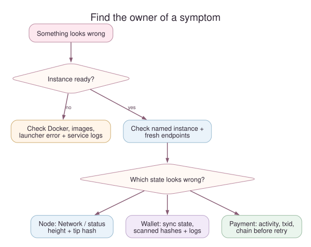
- If
thscannot prepare an instance, start with Docker access and required images. - If the instance is running, get its endpoints and node status.
Ports are fixed per instance, but a second instance was started with a
--port-offset, so confirm you are talking to the name you mean. - If the node is healthy but Wallet looks stale, inspect wallet reconciliation state and logs, not the chain height alone.
- If a request timed out, inspect the operation’s recorded activity or node tip before deciding whether another write is safe.
Establish which instance you are using
In a second terminal, replace alice with your instance name:
ths --name alice status
ths --name alice endpoints --json
ths --name alice logs app
Omit --name alice for default. ths status reports whether the app
container is running; it does not show the node height. The Network
page and GET /api/v1/status show node height and wallet sync status.
An instance keeps the same ports across runs; a different instance has
different ports only because it was started with a different
--port-offset.
Match the symptom to the next observation
| What you see | What it means and what to do |
|---|---|
Docker is not reachable | Run docker version. Its server section must respond without sudo. Start Docker Desktop or the daemon, then run ths doctor. |
ths: command not found after installation | Two different causes. Either nothing was installed — the installer runs ths pull before moving the binary into place, so with Docker stopped it downloads images, fails, and leaves no executable; start Docker and rerun, or rerun with TSZ_SKIP_IMAGE_PULL=1. Or it installed fine and ~/.local/bin is not on PATH; check with ls ~/.local/bin/ths, then fix PATH or reinstall with TSZ_INSTALL_DIR set to a directory already on it. |
port 32805 is already in use on 127.0.0.1 | Host ports are fixed defaults, and the launcher names the occupied one instead of choosing another. Usually another instance already holds it: run ths list. Start this one with ths --name <NAME> start --port-offset 10 (any multiple of 10) to shift all four of its ports. |
required image ... is unavailable | An installed launcher can run ths pull. From source, run cargo run -p thus-spoke-zakura -- build --dev. Start again after the images are present. |
| A source edit does not appear in the normal dashboard | The launcher runs an image, not live source. Rebuild with cargo run -p thus-spoke-zakura -- build --dev and start a fresh instance. Vite iteration has its own source workflow. |
instance alice does not exist or an endpoint is wrong | Run ths list, which prints every known instance with its dashboard URL. Use the same --name for every command and read its ports from ths --name alice endpoints --json. |
Startup never reaches alice is ready | Read the launcher’s printed error first. While the relevant container still exists, use ths --name alice logs zakura -f, ths --name alice logs lightwalletd -f, or ths --name alice logs app -f. Startup waits for the node, index, wallet sync, and Account 1 funding; a failed start cleans up its containers. |
| Wallet says data may be stale | Read GET /api/v1/status: wallet_sync.state, wallet_sync.error, observed and fully scanned heights and hashes. Check ths logs lightwalletd -f and ths logs app -f. Wait for ready before relying on balances; the server retries background reconciliation. |
| A send reports insufficient spendable funds | Ask POST /api/v1/send/quote for that account and source pool: it dry-runs a proposal and returns available_zatoshi, fee_zatoshi, and max_zatoshi without broadcasting. Compare your amount with max_zatoshi, not with the displayed total, which may include a different pool, pending change, or funds not yet spendable. Also confirm wallet sync is ready. |
Faucet or send returned broadcast activity | Save the txid, inspect Recent activity and chain state, and mine if the transaction remains unconfirmed. Read Chapter 6 before resubmitting. |
| A mine request timed out or errored | Compare node height and tip hash via Network or GET /api/v1/status before trying again. Blocks may have been generated before wallet reconciliation failed; mining has no retry key. |
Use ths logs app, ths logs zakura, or ths logs lightwalletd
for recent output; add -f to follow. ths doctor checks Docker
connectivity, not wallet health.
Reset only when you mean to lose this instance
If an interrupted run left this instance’s resources, ths --name alice reset --force removes its containers and volumes. That permanently
deletes its chain, wallet, seed, keys, and test funds. It does not remove
another named instance. A normal foreground run cleans itself up on
Ctrl+C.
This environment is Regtest only. Its seed is fixed and public, so these
addresses and keys are known to anyone who has read the project. Never use
them for real ZEC, and never expose these local services beyond
127.0.0.1.